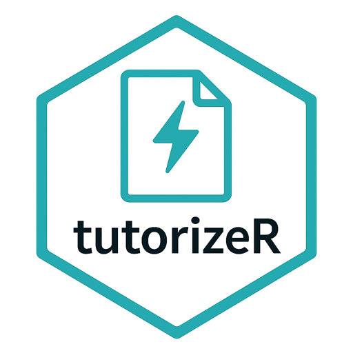
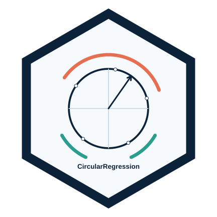

Packages R
Cette page rassemble les packages R que je développe et maintiens, avec une attention particulière aux packages disponibles sur le CRAN et accompagnés d’une documentation ouverte.
Les informations CRAN ci-dessous ont été vérifiées le 24 juin 2026 à partir des fichiers DESCRIPTION officiels du CRAN.
Packages sur le CRAN

tutorizeR
Conversion de matériel pédagogique .Rmd ou .qmd en tutoriels interactifs pour learnr ou quarto-live, avec rapports de conversion, tags enseignants et banques de questions.
Version CRAN : 0.4.5, publiée le 11 juin 2026.
DonutMap
Cartes en anneaux avec sf, ggplot2 et leaflet. Le package permet de placer des diagrammes en anneau sur des cartes statiques ou interactives et d’ajouter des flux origine-destination.
Version CRAN : 0.1.0, publiée le 8 juin 2026.
ggcircular
Extension ggplot2 pour données circulaires, axiales et directionnelles : diagrammes de rose, densités circulaires, directions moyennes, arcs de confiance et visualisations de mouvement.
Version CRAN : 0.1.0, publiée le 4 juin 2026.

CircularRegression
Modèles de régression pour réponses circulaires : régression angulaire homogène, consensus angulaire, workflow en deux étapes et extension à effet aléatoire pour réponses circulaires groupées.
Version CRAN : 0.5.1, publiée le 10 juin 2026.
GeneralOaxaca
Décomposition de Blinder-Oaxaca pour modèles linéaires généralisés, avec erreurs-types bootstrap et sorties pour décompositions en deux et trois composantes.
Version CRAN : 1.0, publiée le 17 août 2015.
Projets GitHub liés
Les vignettes ci-dessous présentent des packages et compendiums R publics hébergés sur mon GitHub, mais non listés dans la section CRAN ci-dessus.
GLBFP
Estimation de densité
Estimateurs ASH, LBFP et GLBFP pour l’estimation non paramétrique de densité, avec grilles, calculs clairsemés, scores leave-one-out et outils de visualisation.
learnrTrackR
Enseignement interactif
Suivi des tentatives dans des tutoriels de style learnr, stockage SQLite ou PostgreSQL, résumés de scores, exports Moodle et rapports pédagogiques.
gmov
Mouvement animalier
Diagnostics de validation générative au niveau des trajectoires pour modèles SSF et iSSF, en comparant trajectoires observées et simulées.
contextR
Interprétation statistique
API S3 pour extraire des résultats statistiques structurés, construire des prompts et produire des explications contextualisées avec contrôles de validation.
UlavalSSD
Données pédagogiques
Données et fonctions utiles pour l’enseignement de l’introduction à la science des données à l’Université Laval.
HMMSSFGenerativeRepair
HMM-SSF
Prototype de diagnostics de simulation, compatibilité, sharpness et interprétation pour modèles HMM-SSF et HMM-iSSA.
evalue-HMM
Diagnostics prédictifs
Diagnostics prédictifs par e-valeurs pour modèles de Markov cachés appliqués aux données de mouvement animalier.
hsmmHmmApproximation
HSMM
Compendium de recherche pour des approximations HMM à horizon fini de modèles semi-markoviens cachés.
Contributions open source externes
Ces contributions concernent des packages maintenus dans d’autres organisations ou comptes GitHub.
amt
Movement ecology
Contribution au package R amt avec le PR #142, “Add generative validation diagnostics”, fusionné le 23 juin 2026 dans jmsigner/amt.